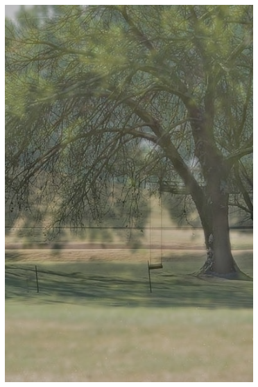
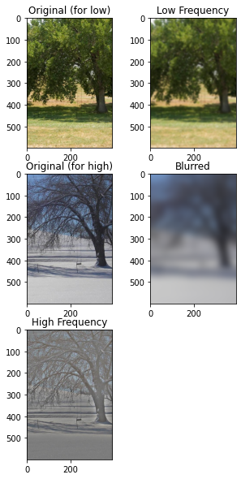
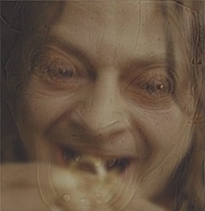
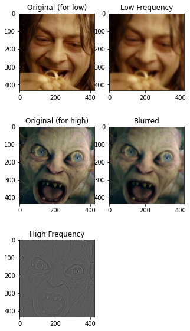
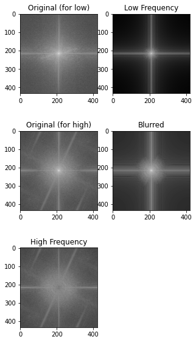
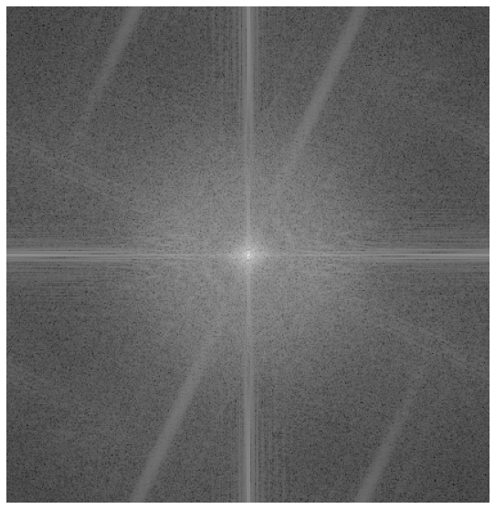

As introduced by Oliva et al. in the 2006 SIGGRAPH paper, "Hybrid Images", high frequency data from one image can be combined with low frequency data from another to produce an image in which both originals can be seen at different distances. Simply, people can only see small details so clearly. At a distance, high frequency information in an image is no longer visible, and the low frequency data is all one can see. On the other hand, when one is up close to an image, they can see the high frequency information clearly. For this reason, hybrid images can combine two different images into one, where both can be seen somewhat clearly at different distances.
As suggested in the paper, I achieve a low-pass filter by using a simpler Gaussian filter. I achieve a high-pass filter with an impulse filter by subtracting a Gaussian-blurred image from the original. To combine images, I simply average them. Getting appealing results comes down to finding Gaussian parameters for each of the filters. I did also play a bit with combining images with a weighted average, but I ultimately didn't find any of those results more compelling than a regular average (weights both equal to one).
As a big fan of trees, I began by finding a nice picture of the same tree from during winter and summer. I figured it would be interesting to see the leafy tree at a distance but also see the details of branch positions deep into the tree when closer. Here are the results. Since this is the first result I am showing, I included a graphic containing the images that were produced along the way, which shows the process of creating the final product.


Another natural subject for me after trees is Lord of the Rings. Here is an image which at a distance shows Smeagol in his early days after finding the Ring, while up close you can see the details of an angry Gollum.


I particularly like this one since it shows a change in character as the viewer changes position. I'll take this chance to show the same process in the Fourier domain. Using the same method as before (and getting the same final product), here are the Fourier transforms of each image along the way. The frequency domain here behaves just how we'd expect. Blurring removes most high frequency points, especially those that are isolated. Subtraction of the blurred image from the original in the high-frequency case gives just the higher frequency parts of the image. The resulting hybrid image at the end has brightness all over.

Here is the same final result but in the Fourier domain.

[1] Assignment from Professor Pless
[2] "Hybrid Images" by Oliva, Torralba, and Schyns. In SIGGRAPH, 2006.